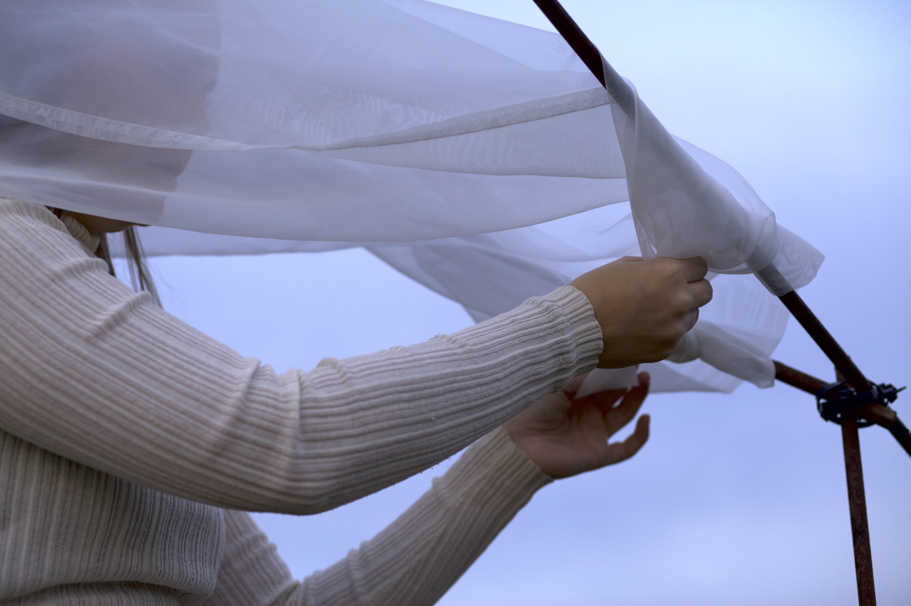
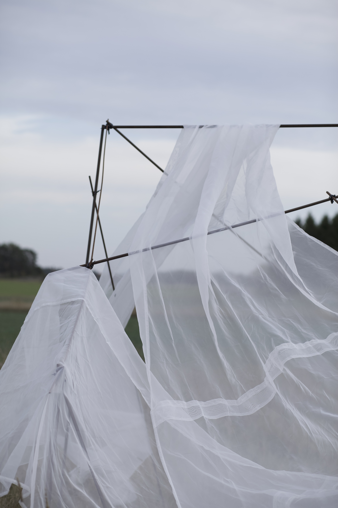
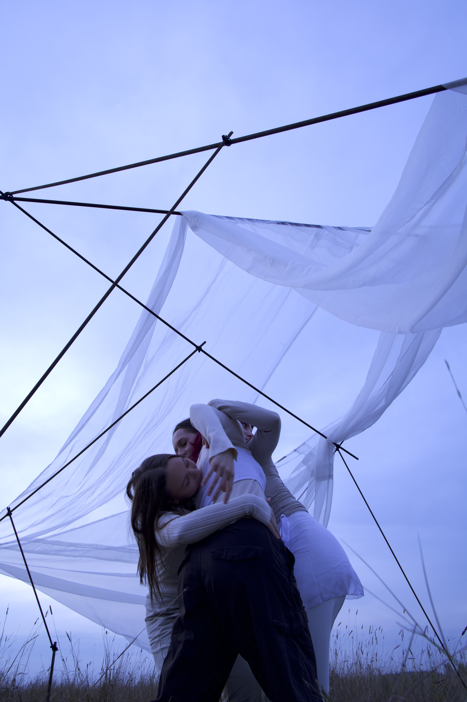
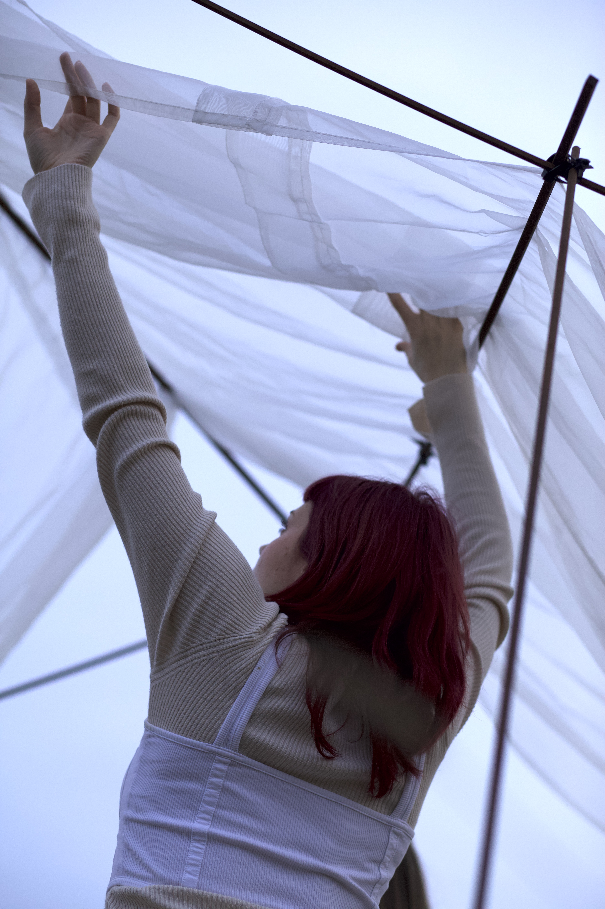
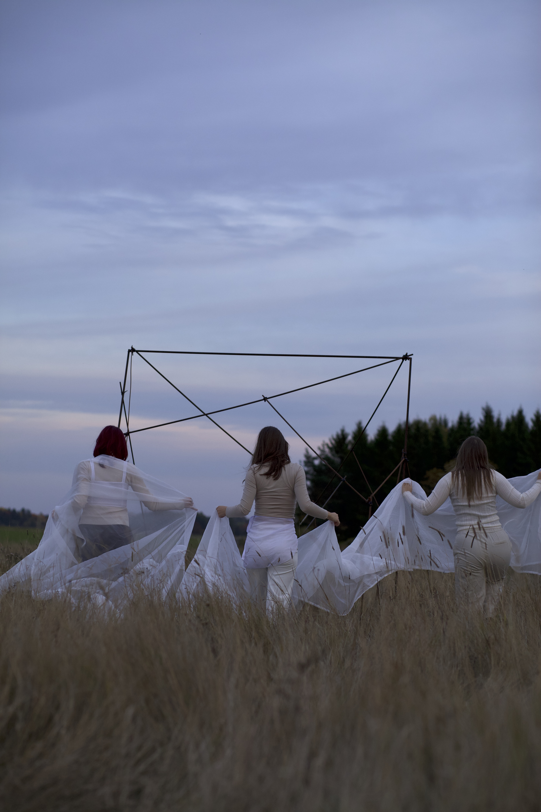

Breath and Soil





Breath and Soil is a site-specific art installation and performance consisting of a large metal sculpture built in nature where the dancers move through space, seeing the air, clouds, soft soil, and tall grass through soft fabric covering hard metal.